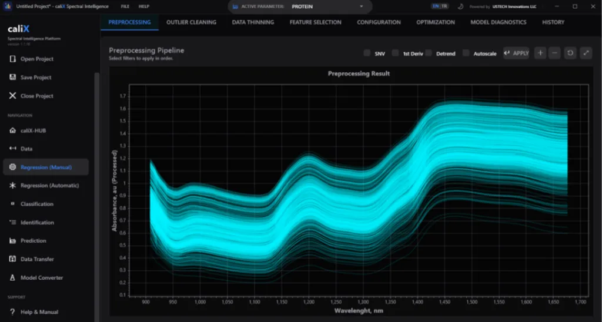
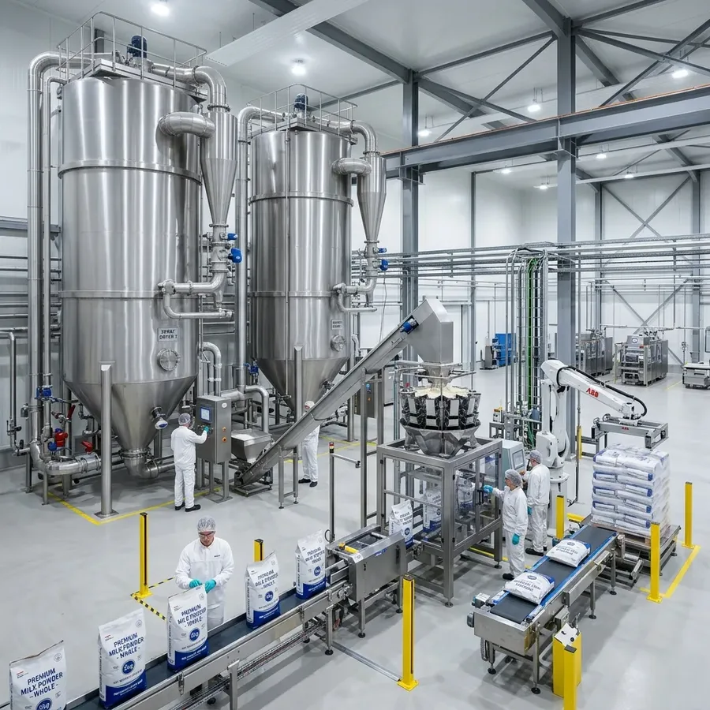
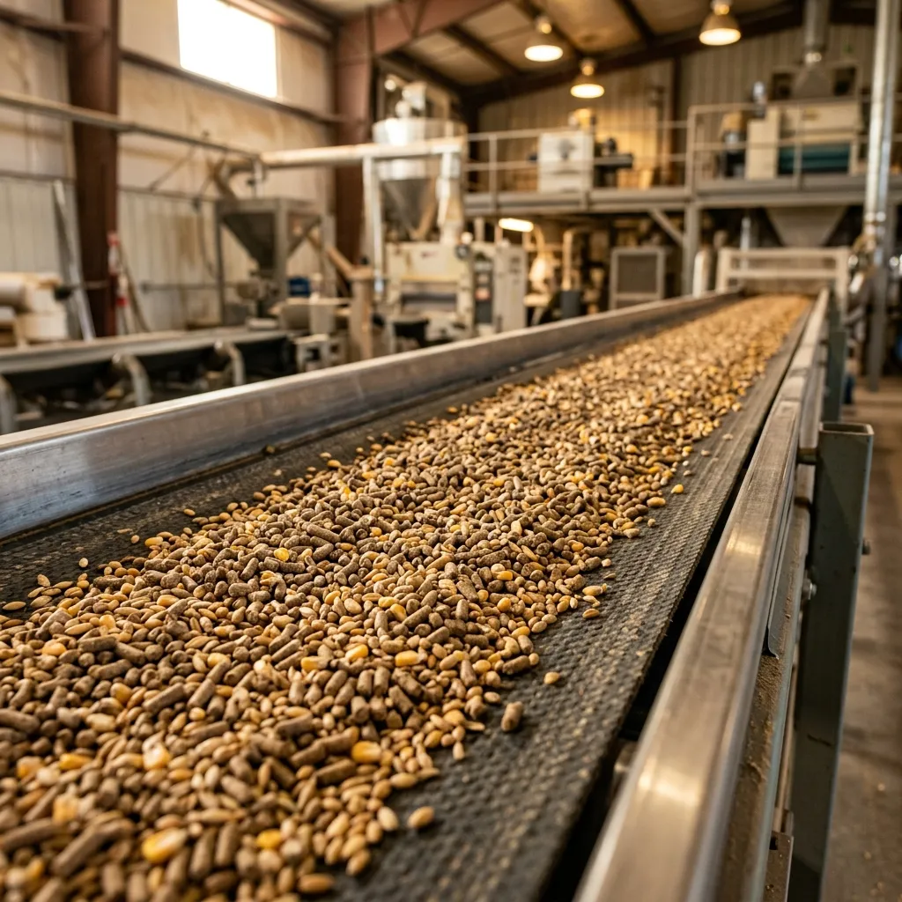
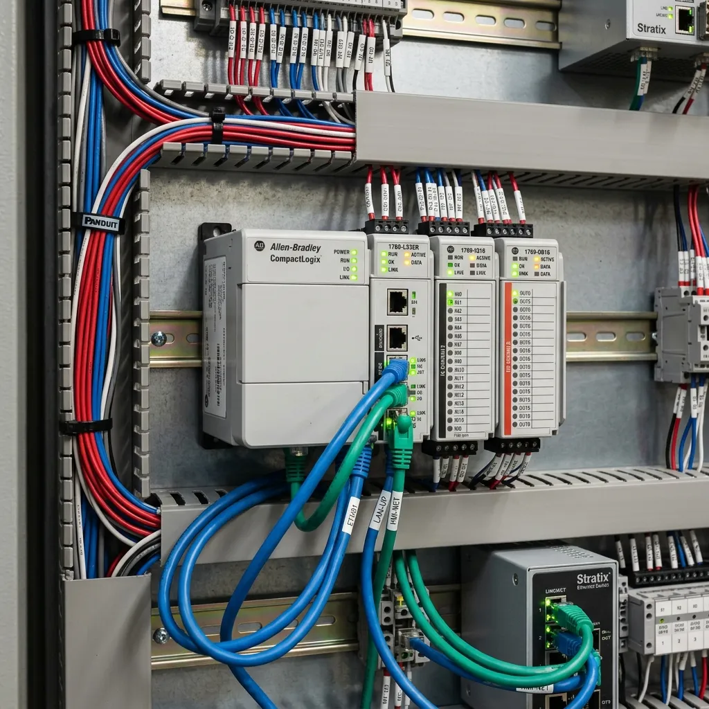
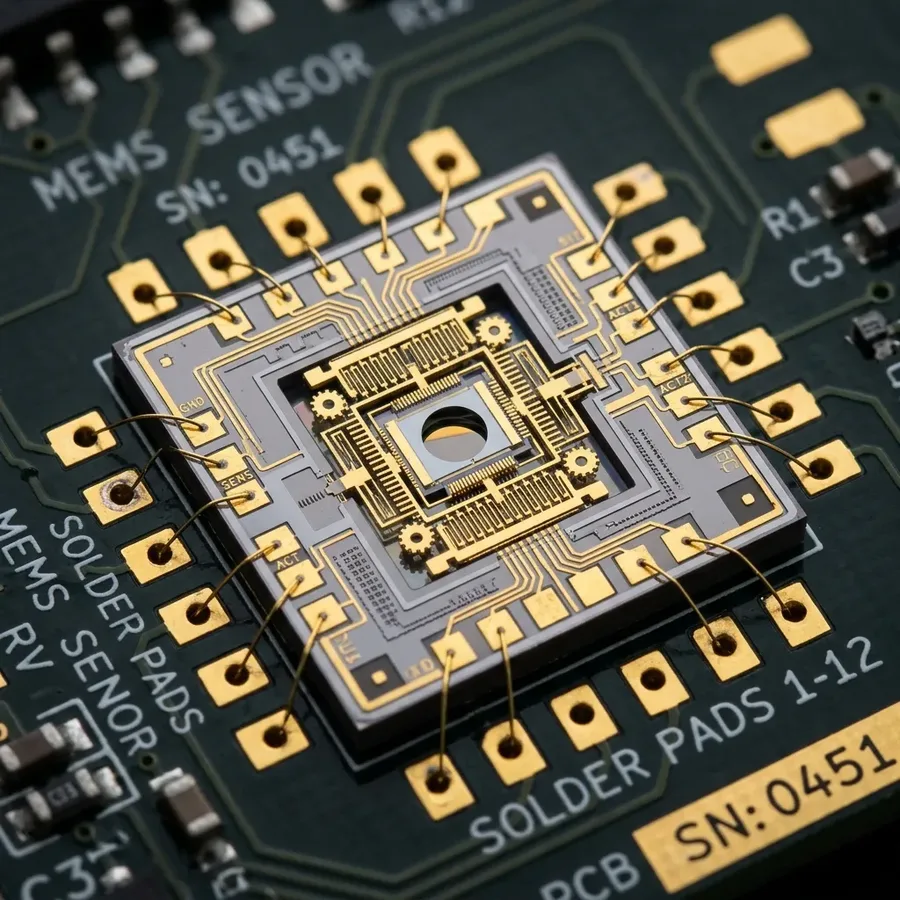
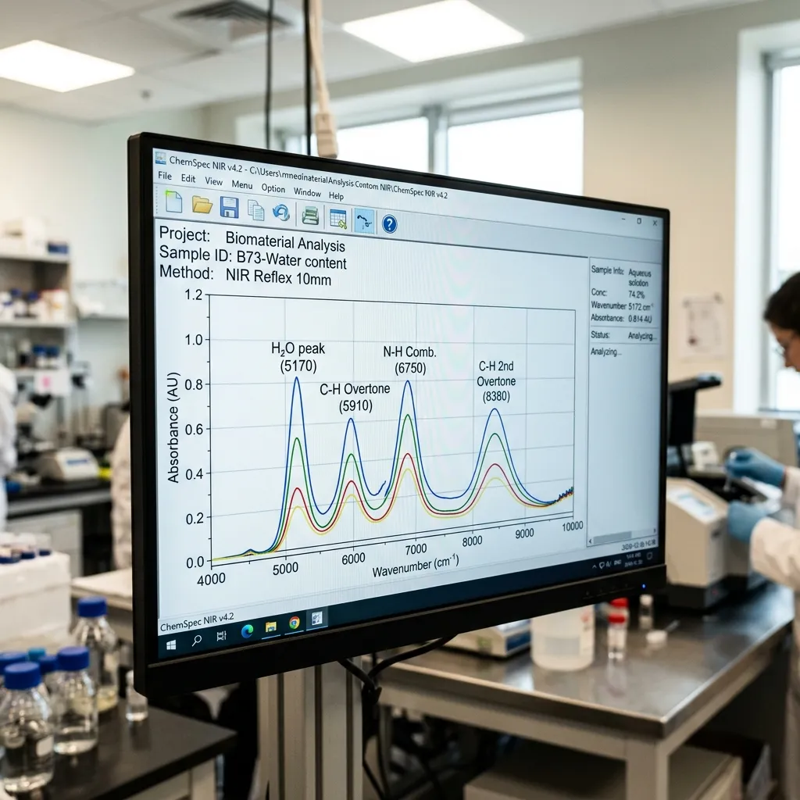
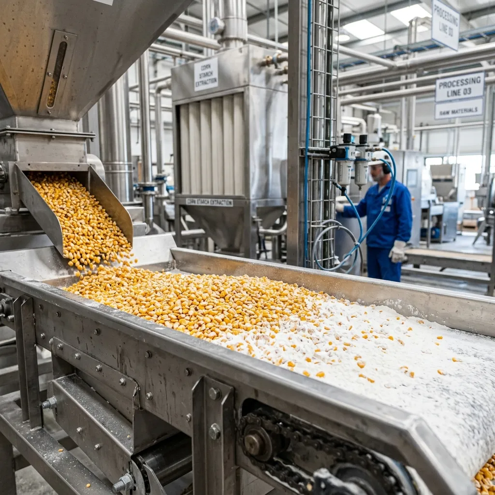

caliX: Next-Generation Chemometrics Workspace
Building high-accuracy calibration models shouldn't take weeks of manual trial-and-error. caliX automates your entire chemometrics workflow—from raw data import and preprocessing to AutoML selection and model transfer. Build robust, GxP-compliant calibrations in minutes.
AutoML Grid Search
Sweeps 95+ preprocessing and regression combinations in seconds, selecting the optimal elbow-point model to prevent overfitting.
Spectral Preprocessing
Apply mathematical filters (SNV, MSC, Savitzky-Golay derivative smoothing) to eliminate physical light scatter instantly.
Spectrometer Standardization
Transfer master models to slave instruments effortlessly using Piecewise Direct Standardization (PDS) and SBC algorithms.
From Scan to Control in 3 Simple Steps
caliX acts as the intelligence bridge, connecting raw laboratory scans directly to active factory automation.
Import & Preprocess
Drag and drop spectral files from any instrument format. Instantly apply mathematical filters like SNV and Savitzky-Golay to remove physical light scatter and baseline drift.
AutoML Optimization
Let AutoML sweep 95+ modeling pipelines. caliX analyzes PCA and PLS leverage metrics automatically, generating robust calibrations and preventing overfitting.
One-Click Deployment
Export validated calibration models directly to ProChem Desktop or SCADA. Calibrations are immediately active, driving valves and pumps in real time.
Tailored Solutions for Key Processing Sectors
Every production process has unique requirements and challenges. We develop tailored solutions designed to integrate seamlessly into existing operations, ensuring minimal disruption and maximum efficiency. By combining advanced technologies with application-specific expertise, we deliver reliable data, actionable insights, and measurable value that help our customers optimize processes, improve product quality, and enhance operational performance.
Food & Feed
Optimize formulations, verify raw grains at receiving, and control moisture, protein, fat, ash, starch, and fiber in real-time under 60 seconds.
Explore IndustryDairy
Maximize cheese yields, standardize cream, and monitor butter fat, total protein, lactose, and total solids dynamically in raw milk, concentrates, and powders.
Explore IndustryChemical & Pharma
Monitor chemical syntheses, polymerizations, blend uniformity, and hydroxyl values directly in process lines with explosion-proof fiber-optic probes.
Explore IndustryUSTECH Innovations is Here for Your Sustainable Production Processes!
With our precise measurements for solid and liquid products, we ensure the quality standards of your production processes at every stage. Leveraging our spectroscopy technology, we enhance your operational efficiency while contributing to your sustainability goals.
Our Solutions
Discover our range of industrial FT-NIR spectrometers, analytical hardware, automation software, and chemometric calibration modeling workspaces.
Real-Time, Closed-Loop Optimization
Collect continuous flow data from production lines, pipelines, and mixers. Our ProLine17ES and ProLine2550 inline spectrometers continuously scan materials inside reactors or pipelines.
By obtaining real-time composition trends for moisture, fat, protein, and chemical content, facilities can automatically adjust valves, dosing pumps, and blenders to ensure every batch meets specs with zero product waste.
Calculate Your Annual Savings
Proven Financial Return on Investment
By reducing over-formulation safety margins and preventing product rejections, plants routinely recoup their total equipment investment within the first few months. Adjust the parameters on the left to see your estimated financial return.
Estimated Annual Savings
Payback Period
Quality Yield Increase
Latest from USTECH Blog

Standardizing Moisture in Milk Powder Spray Drying
Optimize yields and prevent sticky powder clogs on spray dryer discharges.

Blend Uniformity Verification in Active Pharmas
Verify dry powder homogeneity dynamically inside bin blenders without stopping.

Reducing Ingredient Waste in Cattle Feed
Learn how inline NIR sensors over feed mixer exits improved yield by 1.2%.

Introduction to PLS Regression in caliX Suite
A step-by-step tutorial explaining how to compile calibration models from reference wet chemistry.

Standardizing OPC UA Closed-Loop Integrations
Industrial automation guide mapping spectrometer outputs into closed-loop PLC tag structures.

Calibration Transfer Feasibility on MEMS
How MEMS optical tolerances enable unit-to-unit calibration transferability without adjustments.

Understanding Savitzky-Golay Preprocessing
A mathematical breakdown of smoothing filters, parameters, and derivatives for NIR spectra.

Optimizing Starch Extraction in Wet Milling
How a processing plant used at-line NIR composition monitoring to maximize corn starch yield.